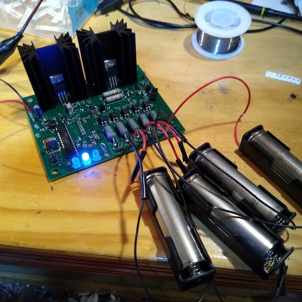
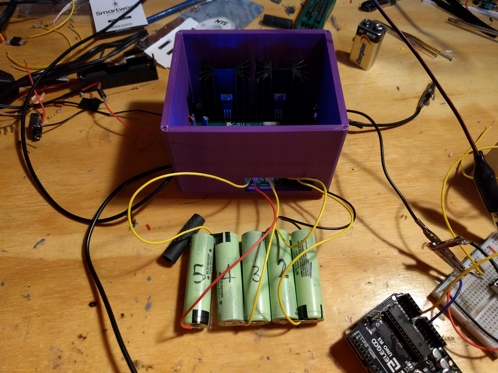
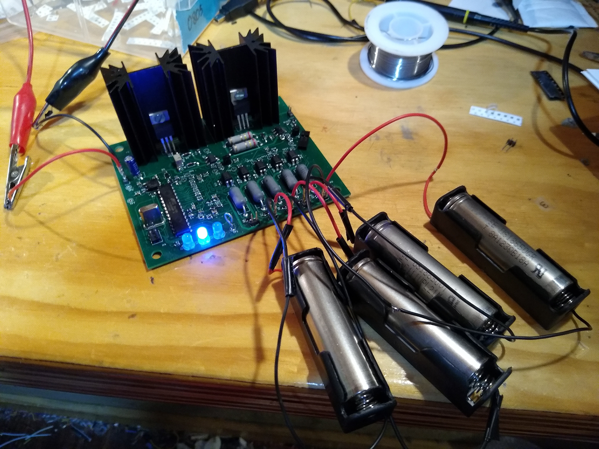

The system has changed quite a lot with the second attempt; is is only designed for five batteries in series this time because regulation gets difficult with voltages that are high enough to charge ten batteries in series. Instead of the switching regulator and constant current sink that was used with the last version there are two LM317s, one wired as a constant voltage source, and one wired as a constant current source. These are then switched with P-channel MOSFETs. The battery voltage reading and balancing are the same as the last circuit. The controller is somewhat different; instead of using an Arduino with wires going over to the main board a ATMega328p is used on the board. This is programmed in C without the use of Arduino.
I have done quite a lot with the project sense the last update. I have got five fresh 18650 batteries to test it with. So far I have had mixed results, on the test after the first charge I was able to get nearly the capacity given by the manufacturer, but in proceeding tests the capacity that I was able to get started to go down. I will never be able to get full capacity because the low battery cutoff voltage in my system is a bit higher than the cutoff voltage given by the manufacturer. I also know that there is some systematic error with my scraped together current sink that I am using for testing; the current starts to drift up with time.

.
I have also made a 3D printed enclosure for the project, I still need to make some type of lid.
The firmware is completed for the most part; there are a few things that maybe could be improved. The next step is testing the BMS. I have come up with some test methods and I am starting the testing process. There will basically be a charge test and a discharge test where quantities such as battery voltage and time are measured. I am also going to try to do a coulomb counting test to determine battery pack capacity.
The hardware part of the next circuit board is hopefully finished; it has arrived and I have assembled it. I now working on writing the firmware, I have decided to take the plunge and not use the arduino framework (although I am using an arduino as an ISP programmer).

After spending quite a bit of time trying to make the first version work I decided to make another circuit board. The main problem with the first board was reading the battery voltages preciously; for some reason they were moving around significantly each time they were read. This may have been because of significant noise throughout the entire circuit from the switching regulator. I will add more details on the second board when I am finished designing it and I am in the process of testing it.
Currently the programming is being done for this project. After trying some other options I have decided just to use the standard arduino IDE and framework. I am starting by just trying to balance and charge five batteries instead of the full 10 that the system can handle. Reading the battery voltages accurately has turned out to be somewhat of a problem. Filtering and possibly a more accurate ADC module may need to be added.